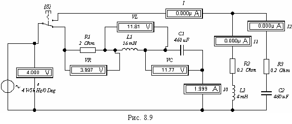

Задание 4. Собрать схему цепи (см. рис. 8.9) на рабочем поле программы EWB или на рабочем поле программы MS8 Education (либо открыть
файл Lr8.ewb при выполнении работы в среде EWB или файл Lr8.ms8 при выполнении работы в среде MS8SD); согласно варианту задания установить параметры элементов. При этом для амперметров установить режим работы "АС" и внутреннее сопротивление 1 мОм, а для вольтметров - режим "АС" и внутреннее сопротивление 1 МОм.
Ступенчато изменяя частоту ЭДС источника энергии е от 30 Гц до 120 Гц, снять показания приборов и занести их в табл. 8.2.